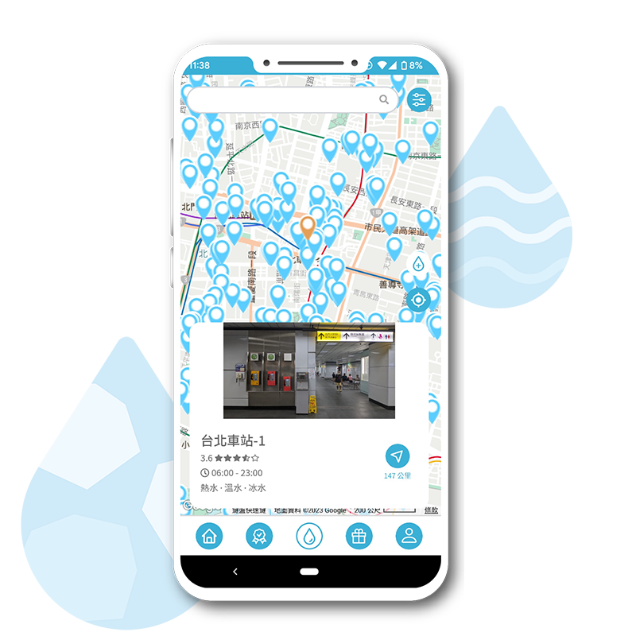
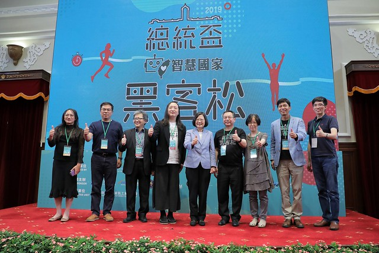
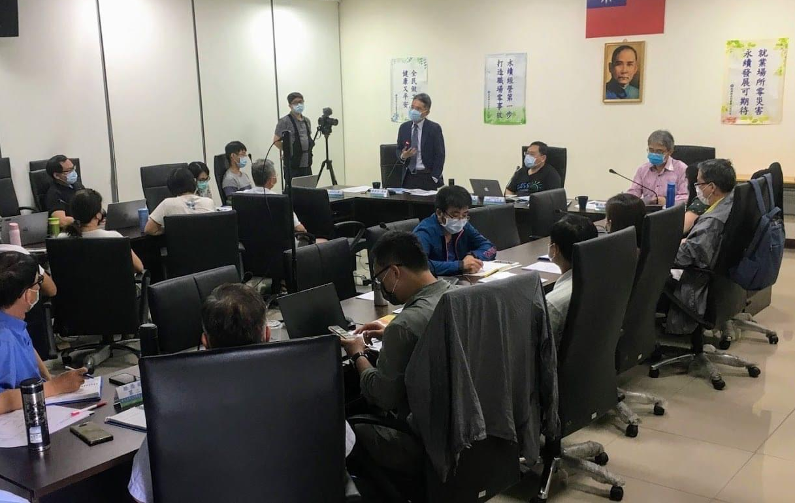

2020 WINNER / CIRCuPLUS
Feng Cha
An empty bottle.
A place to refill it.
Already a civic project
before the hackathon.
6,000 → 15,000+
Refill points · 2020 → team report, 2025
A PERSONAL VIEW FROM TAIWAN
Hacktivism, inside
and outside government.
An excuse to step outside
everyday constraints.
MY TECHNICAL ESTIMATE
“This doesn’t look that difficult.”
MY COLLEAGUES’ RESPONSE
“Mashbean,
you’re being
very naive.”
Government doesn’t work like that.
Someone has to be able to approve it.
The code was never the only thing they were waiting for.

I, as president,
support reform.
Tsai Ing-wen
27 July 2019
A relationship can begin before a contract.
2018 WINNER / EMERGENCY CARE
救急救難一站通
National Fire Agency × health ministry × NCDR
cities & counties
Automated data transfers
2024 results · NCDR

2020 WINNER / CIRCuPLUS
An empty bottle.
A place to refill it.
Already a civic project
before the hackathon.
6,000 → 15,000+
Refill points · 2020 → team report, 2025
2021 WINNER / LASS
Shared maps and local knowledge
in Touqian River governance.
Water Resources Agency partnership since 2019

AFTER LEAVING THE MINISTRY
There is no reason the work should end
when my job does.
MY INTERPRETATION
When an exception becomes
a new way of working.